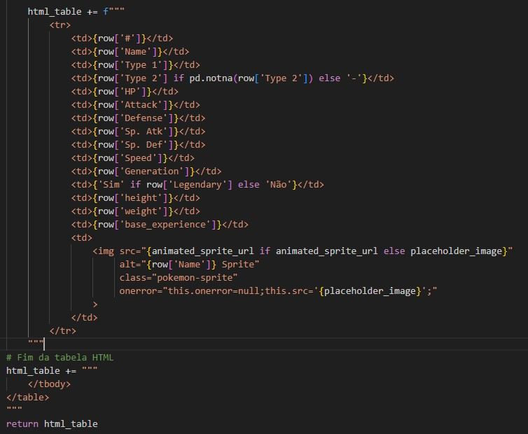
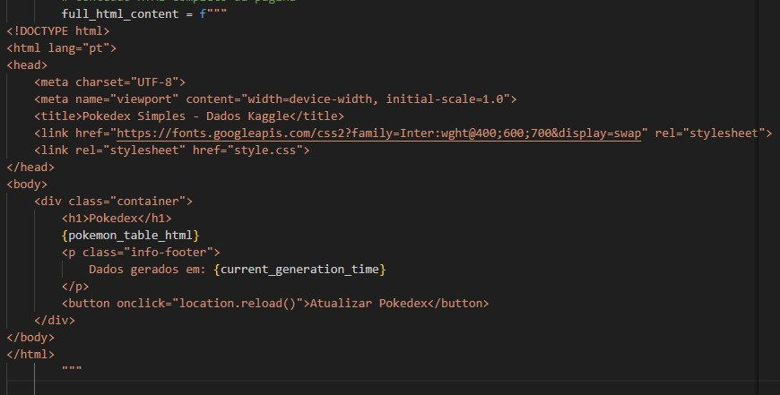
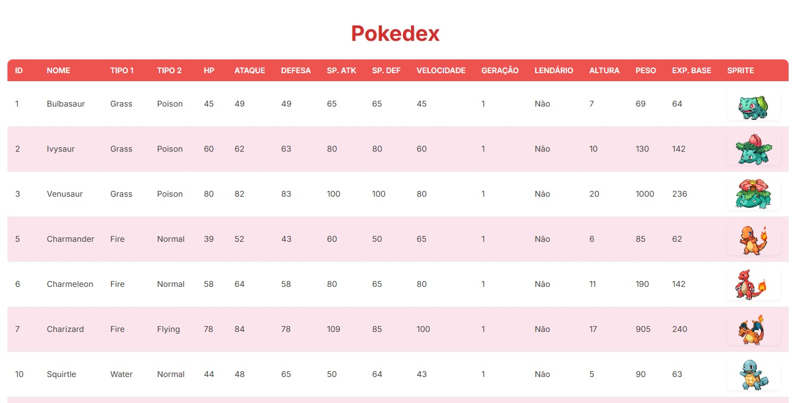
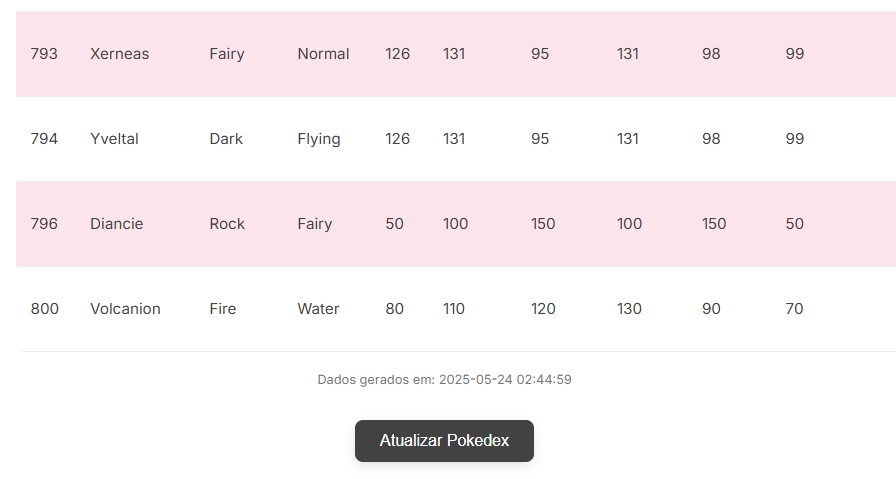
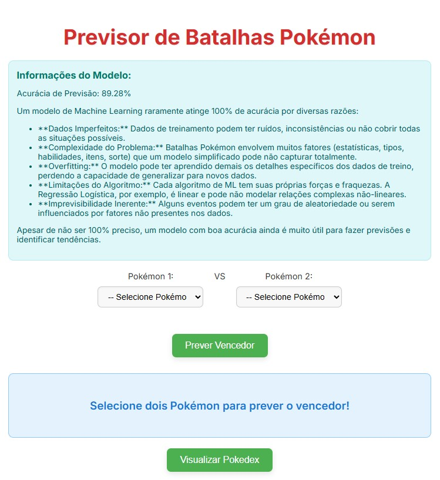
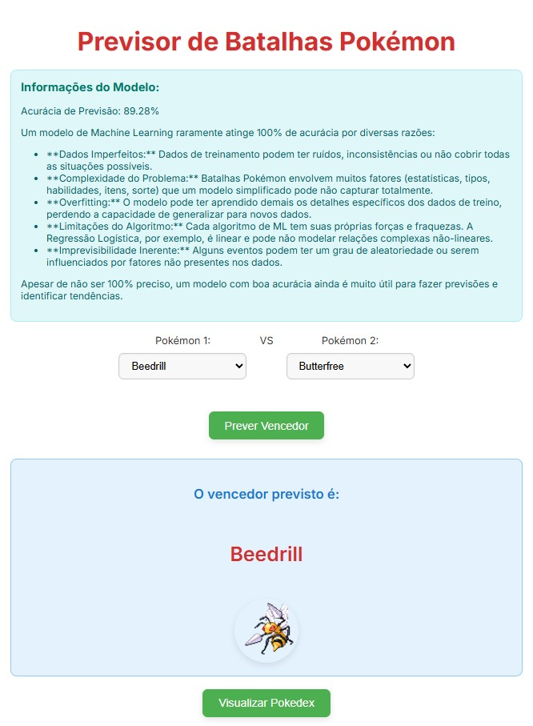

Descrição do Projeto
Projeto de Inteligência Artificial desenvolvido com Python, HTML, CSS e JavaScript, para prever o possível resultado de uma batalha entre Pokémons.
Bibliotecas
As ferramentas empregadas no projeto foram:
- Pandas: Para manipulação e tratamento de dados;
- Scikit-learn (sklearn): Biblioteca utilizada para taredas de Aprendizado de Máquina (Machine Learning), incluindo Classificação, Regressão, Agrupamento e Redução de Dimensionalidade.
- Json: Biblioteca padrão para trabalhar com o formato de dados JSON.
- itertools: Coleção de funções que criam iteradores, que são objetos que permitem percorrer sequências de elementos.
- Árvores de Sintaxe Abstratas (ast): Permite que as aplicações Python trabalhem com as representações estruturais do código Python como árvores.
- Datetime: Módulo que fornece classes para trabalhar com datas e horas de forma eficiente.
import pandas as pd
from sklearn.model_selection import train_test_split
from sklearn.linear_model import LogisticRegression
from sklearn.metrics import accuracy_score
import json
import itertools
import ast
import datetimeEtapas do Projeto
O projeto consiste em três etapas principais: criação da pokédex, treinamento do modelo e previsor de resutado da batalha.
-
Pokédex
Dispositivo fictício do universo Pokémon, utilizado para catalogar e fornecer informações sobre as diferentes espécies de Pokémon.
A página foi feita em Python e HTML.
Para a criação da Pokédex utilizamos as seguintes bibliotecas
import pandas as pd import datetime import json import astO projeto começa com a criação de algumas variáveis para armazenar algumas informações:
POKEMON_CSV_FILE = 'final_pokemon.csv' OUTPUT_HTML_FILE = 'index.html' NUM_POKEMON_TO_SHOW = 800O arquivo
final_pokemon.csvpossui informações sobre os pokémons como: nome, tipo, valores de HP, ataque, defesa e etc.A variável
OUTPUT_HTML_FILEserá utilizada posteriormente para criar o conteúdo da página HTML da pokédex.A variável
NUM_POKEMON_TO_SHOWserá utilizada posteriormente para carregar a quantidade de pokémons na pokédex.Para a criação inicial da Pokédex, criei a função
generate_pokemon_table_html.A função é responsável por criar a tabela onde os dados dos pokémons serão apresentados.
def generate_pokemon_table_html(pokemon_data):if pokemon_data.empty: return "<p>Nenhum Pokémon encontrado ou dados vazios.<
p>"Primeiramente, iniciei a função para validar se de fato a base de dados dos pokémons possui um conteúdo, se não possuir, não será possível dar continuidade no código, então será encerrado.
A variável
html_tableirá armazenar o cabeçalho da tabela.
Figura 1: Cabeçalho da Tabela. O próximo passo é mostrar o conteúdo da pokédex.
Para isso, utilizei um laço
for. Basicamente, ele percorre a base de dadosfinal_pokemon.csve adiciona na tabela a quantidade informada na variávelNUM_POKEMON_TO_SHOW.for index, row in pokemon_data.iterrows():O loop
for index, row iné responsável por percorrer toda a base de dados.-
indexRecebe o índice da linha atual.
-
rowRecebe o conteúdo completo da linha atual como um objeto
Seriesdo Pandas. -
pokemon_dataVariável responsável por adicionar o conteúdo dos pokémons em cada linha.
-
iterrows()Método iterador da biblioteca Pandas. Um iterador é como um "guia" que sabe como percorrer os itens de uma coleção um por um, neste caso são as linhas da base de dados .CSV.
Ainda dentro do laço
fora base de dados dos pokémons, possui uma coluna específica para a imagem do pokémon, onde contém um dicionário com dois conteúdos: uma imagem estática e um gif animado.Optei por utilizar o gif animado, porém caso apresente erro em algum link, adicionei um tratamento de erro, para utilizar a imagem estática e, se apresentar erro neste link também, uma imagem será apresentada com a mensagem "No img".
Para validar o link que será utilizado, utilizei a função
print()para apresentar o log no console e identificar facilmente onde ocorreu o erro.animated_sprite_url = "" try: sprites_dict = ast.literal_eval(row['sprites']) animated_sprite_url = sprites_dict.get('animated', '') if not animated_sprite_url: animated_sprite_url = sprites_dict.get('normal', '') except (ValueError, SyntaxError, AttributeError): animated_sprite_url = "" print(f"Pokémon: {row['Name']}, URL do Sprite: {animated_sprite_url}") placeholder_image = "https://placehold.co/60x60/cccccc/000000?text=No+Img"O código utiliza uma estrutura de tratamento de exceções, que lida com erros que ocorrem durante a execução do código.
O bloco
tryinicia a estrutura e retorna um determinado valor caso não apresente falha.Ainda dentro do início da estrutura, utilizei a estrutura condicional
ifpara um retorno negativo, ou seja, caso não seja possível utilizar o link do gif animado, o link da imagem estática será utilizado.Para finalizar a estrutura de tratamento de exceções, o bloco
exceptirá tratar o erro, caso não seja possível utilizar o gif animado e nem a imagem estática, adicionando uma imagem "No img".Para facilitar a busca pelo erro, adicionei o bloco de código
print(f"Pokémon: {row['Name']}, URL do Sprite: {animated_sprite_url}"), pois ele ficará responsável por mostrar exatamente qual imagem obteve erro no link.Nesta etapa, configurei a variável
placeholder_image, que recebe o link de uma imagem "No img".Para finalizar o laço
for, concatenei a variávelhtml_tablejunto ao bloco de código abaixo, para visualizar as informações e imagens dos pokémons.Figura 2: Cabeçalho concatenado com o conteúdo da tabelsó falta Este código HTML é responsável por configurar a ordem dos dados dos pokémons nas linhas da tabela.
No caso da imagem do pokémon, a variável responsável pelo link da imagem
animated_sprite_urldeve ter seu conteúdo analisado.Para analisar o conteúdo da variável, utilizei o comando abaixo:
img src="{animated_sprite_url if animated_sprite_url else placeholder_image}" alt="{row['Name']} Sprite" class="pokemon-sprite" onerror="this.onerror=null;this.src='{placeholder_image}';"O código inicia com uma expressão python dentro de uma tag HTML utilizando f-strings. A expressão analisa se a variável
animated_sprite_urlpossui algum conteúdo, se existir um conteúdo de fato nesta variável então a tag HTML "img src" irá utilizar este conteúdo. Porém, se a variável não tiver conteúdo, então o conteúdo dela será o conteúdo da variávelplaceholder_image, no caso o link da imagem "No img".Para finalizar a criação da pokédex, criei uma função
main().Essa função também utiliza a estrutura condicional de tratamento de exceções.
def main(): try: df_pokemon = pd.read_csv(POKEMON_CSV_FILE) df_display = df_pokemon.head(NUM_POKEMON_TO_SHOW)[[ '#', 'Name', 'Type 1', 'Type 2', 'HP', 'Attack', 'Defense', 'Sp. Atk', 'Sp. Def', 'Speed', 'Generation', 'Legendary', 'height', 'weight', 'base_experience', 'sprites' ]] pokemon_table_html = generate_pokemon_table_html(df_display) current_generation_time = datetime.datetime.now().strftime("%Y-%m-%d %H:%M:%S") full_html_content = f"""Figura 3: Conteúdo HTML. with open(OUTPUT_HTML_FILE, 'w', encoding='utf-8') as f: f.write(full_html_content) print(f"Pokedex HTML '{OUTPUT_HTML_FILE}' gerada/atualizada com sucesso.") except FileNotFoundError: print(f"Erro: O arquivo '{POKEMON_CSV_FILE}' não foi encontrado. Certifique-se de que ele está na mesma pasta do script.") except Exception as e: print(f"Ocorreu um erro: {e}")Começando pelo bloco
try:-
df_pokemon = pd.read_csv(POKEMON_CSV_FILE)Novamente estou utilizando a base de dados armazenada na variável
POKEMON_CSV_FILEe estou armazenando em um DataFramedf_pokemon. -
df_display = df_pokemon.head(NUM_POKEMON_TO_SHOW)[[ '#', 'Name', 'Type 1', 'Type 2', 'HP', 'Attack', 'Defense', 'Sp. Atk', 'Sp. Def', 'Speed', 'Generation', 'Legendary', 'height', 'weight', 'base_experience', 'sprites' ]]Essa linha está realizando a seleção de colunas e a filtragem dos dados, ambos contidos no DataFrame.
Conforme configurado no inicio, a filtragem e seleção serão realizadas para a quantidade de pokémons informados na variável
NUM_POKEMON_TO_SHOW, no caso, 800. -
pokemon_table_html = generate_pokemon_table_html(df_display)A variável
pokemon_table_htmlestá armazenando o conteúdo da função que criei anteriormente:generate_pokemon_table_html. A função solicita um parâmetro, e este é a variável criada há poucodf_display, que contém os dados referentes aos pokémons. -
current_generation_time = datetime.datetime.now().strftime("%Y-%m-%d %H:%M:%S")A função
datetime.datetime.now()é responsável por fornecer o objeto de data e hora atual.A função
strftime("%Y-%m-%d %H:%M:%S")realiza a formatação do formato de hora, seguindo a orientação passada através dos parâmetros da função, no caso: Data -> Ano - Mês - Dia; Hora -> Horas - Minutos - Segundos.Todas as informações de data e hora, estão sendo armazenadas na variável
current_generation_time. -
full_html_contentEsta variável é responsável por armazenar o conteúdo estrutural da página HTML, por exemplo, arquivos de estilização, criação da div responsável por acomodar o conteúdo da pokédex e botão para atualização dos dados dos pokémons, caso exista no servidor alguma nova atualização.
-
with open(OUTPUT_HTML_FILE, 'w', encoding='utf-8') as f: f.write(full_html_content)O comando
withé utilizado em situações onde um recurso precisa ser configurado antes do uso e, em seguida, limpo após o uso. O exemplo mais comum é a leitura e escrita de arquivos, que, no caso, é o que está ocorrendo nesse bloco de código.O comando
openabre o arquivo especificado no primeiro parâmetro, no casoOUTPUT_HTML_FILE.O segundo parâmetro:
wsignifica "write" (escrita de arquivo). Este parâmetro funciona da seguinte maneira: se o arquivo já existir, ele será truncado (seu conteúdo será apagado) e um novo conteúdo será escrito. Se o arquivo não existir, ele será criado.O terceiro parâmetro:
encoding='utf-8', é referente a codificação do texto. A codificaçãoutf-8é amplamente utilizada para textos na web.O comando
as f:atribui um objeto de arquivo aberto e todo o conteúdo, dentro do blocowith open, será referenciado à este objeto.Dentro deste bloco de código, o comando
f.write(full_html_content), é responsável por escrever a string dentro do arquivo. -
print(f"Pokedex HTML '{OUTPUT_HTML_FILE}' gerada/atualizada com sucesso.")Este bloco de código é responsável por compartilhar via terminal/console que tudo ocorreu bem durante a criação do arquivo HTML da pokédex.
O bloco
except:Este bloco é dividido em duas partes: erro personalizado e erro de sistema.
-
Erro Personalizado:
except FileNotFoundError: print(f"Erro: O arquivo '{POKEMON_CSV_FILE}' não foi encontrado. Certifique-se de que ele está na mesma pasta do script.")Este erro é referente ao arquivo da base de dados dos pokémons.
Ocorre quando o arquivo não é encontrado no caminho informado anteriormente. Dessa forma, o bloco
tryserá interrompido e oexceptentrará em ação apresentando a mensagem de erro no terminal/console. -
Erro de Sistema:
except Exception as e: print(f"Ocorreu um erro: {e}")Este erro é referente ao sistema, e não apenas ao arquivo da base de dados. Isso significa que, qualquer erro ocorrido durante o bloco
try, fará com que a execução do bloco seja interrompida e oexceptapresentará a mensagem no terminal/console.A mensagem trará o log exato do erro encontrado no código.
E por fim, realizei a construção fundamental para scripts Python.
if __name__ == "__main__": main()Este de código é utilizado para controlar qual bloco de código será executado como um módulo e não um script.
Qual a diferença entre Módulo e Script?
-
Módulo: É um arquivo Python (.py) que contém funções, classes e variáveis que podem ser utilizadas por outros arquivos Python (.py).
Se for necessário utilizar o módulo em outro arquivo, a variável especial (neste caso:
__name__) será utilizada dentro deste arquivo.Sua execução é importada, ou seja, utilizada por outro arquivo.
-
Script: É um arquivo Python (.py) que contém funções, classes, variáveis ou uma sequência de instruções que podem ser utilizados diretamente no servidor, de modo manual.
Sua execução é direta, ou seja, utilizada diretamente no terminal do servidor.
Caso o script seja tenha como objetivo executar uma sequência de instruções dentro de um servidor, é necessário torná-lo executável e adicionar uma linha de comando no início do arquivo.
chmod +x nome_do_arquivo.pyEste comando bash, torna o arquivo Python executável dentro do servidor.
#!/usr/bin/env python3Essa linha de comando, conhecida como "shebang" ou "hashbang", é utilizada para indicar ao Sistema Operacional qual interpretador Python usar para executar o script.
O código é iniciado utilizando uma estrutura condicional, onde:
__name__, é uma variável especial (atributo mágico ou interno).Se o arquivo é executado diretamente, por exemplo:
python script.py, a variável especial é definida como a string"__main__".Se o arquivo é importado por outro arquivo, por exemplo
import script, então a variável"__name__"dentro do arquivo será definida como o nome do módulo.Então, se a condição for verdadeira, neste caso se o script estiver sendo executado diretamente, a função main() é chamada.
Com isso em mente, está explícito que realizei uma execução direta, veja abaixo:
PS C:\caminho\do\arquivo\diretório> python gerar_pokedex.py Pokémon: Bulbasaur, URL do Sprite: http://img.pokemondb.net/sprites/black-white/anim/normal/bulbasaur.gif Pokémon: Ivysaur, URL do Sprite: http://img.pokemondb.net/sprites/black-white/anim/normal/ivysaur.gif Pokémon: Venusaur, URL do Sprite: http://img.pokemondb.net/sprites/black-white/anim/normal/venusaur.gif Pokémon: Charmander, URL do Sprite: http://img.pokemondb.net/sprites/black-white/anim/normal/charmander.gif ... Pokémon: Xerneas, URL do Sprite: http://img.pokemondb.net/sprites/x-y/normal/xerneas.png Pokémon: Yveltal, URL do Sprite: http://img.pokemondb.net/sprites/x-y/normal/yveltal.png Pokémon: Diancie, URL do Sprite: http://img.pokemondb.net/sprites/x-y/normal/diancie.png Pokémon: Volcanion, URL do Sprite: http://img.pokemondb.net/sprites/x-y/normal/volcanion.png Pokedex HTML 'index.html' gerada/atualizada com sucesso.Ao rodar este arquivo e a mensagem de retorno no log apresentar sucesso, os dados dos pokémons foram adicionados em nosso arquivo index.html
Para confirmar, basta atualizar a página e ao descer o conteúdo é possível observar a seguinte informação: Dados gerados em: 2025-05-24 02:44:59
Figura 4: Início da página de Pokédex. 
Figura 5: Página de Pokédex. Figura 6: Informação de data e hora referente a última atualização dos dados. -
-
Modelo de Machine Learning
O que é Machine Learning?
Machine Learning (ML), ou aprendizado de máquina, é um campo da inteligência artificial (IA) que permite que sistemas de computador aprendam a partir de dados, sem serem explicitamente programados para cada tarefa específica. Em vez de escrever código passo a passo para resolver um problema, você fornece ao sistema uma grande quantidade de dados relevantes, e o algoritmo de ML aprende a identificar padrões, fazer previsões ou tomar decisões com base nesses dados.
Nessa etapa as bibliotecas utilizadas foram:
import pandas as pd from sklearn.model_selection import train_test_split from sklearn.linear_model import LogisticRegression from sklearn.metrics import accuracy_score import jsonIniciei o arquivo de treinamento de modelo informando três arquivos principais:
POKEMON_CSV_FILE = 'final_pokemon.csv' COMBATS_CSV_FILE = 'final_combats.csv' MODEL_METADATA_JSON_FILE = 'model_metadata.json'Nesta etapa além de utilizar o arquivo com informações referentes aos pokémons, foi necessário utilizar o arquivo
final_combats.csv. Este arquivo contém informações referentes a batalhas anteriores entres os pokémons.Basicamente, o modelo de ML irá utilizar este arquivo como base para entender como funcionam as lutas pokémons. Os dados e informações sobre os pokémons serão analisados e, assim, o modelo será capaz de prever um possível ganhar em uma batalha futura.
A previsão é baseada no resultado de batalhas anteriores, um dos motivos para o modelo de ML não possui uma acurácia de 100%.
Outros motivos:
-
Dados Imperfeitos
Dados de treinamento podem ter ruídos, inconsistências ou não cobrir todas as situações possíveis.
-
Complexidade do Problema
Batalhas Pokémon envolvem muitos fatores (estatísticas, tipos, habilidades, itens, sorte) que um modelo simplificado pode não capturar totalmente.
-
Overfitting
O modelo pode ter aprendido demais os detalhes específicos dos dados de treino, perdendo a capacidade de generalizar para novos dados.
-
Limitações do Algoritmo
Cada algoritmo de ML tem suas próprias forças e fraquezas. A Regressão Logística, por exemplo, é linear e pode não modelar relações complexas não-lineares.
-
Imprevisibilidade Inerente
Alguns eventos podem ter um grau de aleatoriedade ou serem influenciados por fatores não presentes nos dados.
Apesar de não ser 100% preciso, um modelo com boa acurácia ainda é muito útil para fazer previsões e identificar tendências.
-
Análise e Manipulação dos Dados
Se refere ao processo de examinar, limpar, transformar, organizar e manipular os dados brutos das bases de dados para que eles possam ser usados de forma eficaz para treinar o modelo de Machine Learning e gerar as informações necessárias para o projeto.
Essa etapa e as próximas, fazem parte da função principal deste arquivo.
def main():Essa função tem como objetivo treinar um modelo de ML que irá prever resultados de batalhas pokémon e armazenar as informações de acurácia no arquivo
model_metadata.jsonA primeira parte da etapa da Análise e Manipulação dos Dados, consiste em trazer informações sobre os pokémons e batalhas, no terimanal/console.
df_pokemon = pd.read_csv(POKEMON_CSV_FILE) print(f"Dados de Pokémon carregados de '{POKEMON_CSV_FILE}'.") print("Primeiras 5 linhas do df_pokemon:") print(df_pokemon.head()) print("\n" + "="*50 + "\n") df_combats = pd.read_csv(COMBATS_CSV_FILE) print(f"Dados de batalhas carregados de '{COMBATS_CSV_FILE}'.") print("Primeiras 5 linhas do df_combats:") print(df_combats.head()) print("\n" + "="*50 + "\n")Primeiro guardei as informações dos pokémons em um DataFrame:
df_pokemon; e as informações sobre as batalhas entre os pokémons no DataFrame:df_combats.No terminal/console serão apresentadas as seguintes informações:
-
De onde o modelo irá obter informações sobre os pokémons e as batalhas.
-
Quais são as informações das primeiras 5 linhas de cada base de dados.
-
Irá formatar o texto com um espaçamento utilizando o caractere "=", para não deixar as informações amontoadas, facilitando a compreensão.
-
-
Merge e Treinamento do Modelo
O que é Merge?
Merge se refere a uma operação comum na manipulação de dados, especialmente quando se usa bibliotecas como o Pandas em Python. A operação de merge é usada para combinar informações de diferentes tabelas de dados, arquivos JSON, SQL e entre outros, com base em uma coluna ou conjunto de colunas relacionadas.
Antes de iniciar operações de Merges entre os DataFrames, irei utilizar o código abaixo para preparar o DataFrame
df_pokemon.df_pokemon_renamed = df_pokemon.rename(columns={'#': 'id'}) if '#' in df_pokemon.columns else df_pokemon.copy()O códgo acima está funcionando da seguinte forma:
-
'#' in df_pokemon.columns:df_pokemon.columnsretorna uma lista com o nome do DataFrame:df_pokemon.'#' in df_pokemon.columnsverifica se a string '#' está presente nessa lista de nomes de colunas. -
df_pokemon.rename(columns={'#': 'id'}) if '#' in df_pokemon.columns else df_pokemon.copy()Apliquei uma estrutura condicional, onde:
Se a condição
'#' in df_pokemon.columnsfor verdadeira:-
df_pokemon.rename(columns={'#': 'id'})será executado -
Significa que, se a coluna "#" existir, a função
.rename()será responsável por renomear a coluna para "id".
Se a condição
'#' in df_pokemon.columnsfor falsa:-
df_pokemon.copy()será executado. -
Significa que a função
.copy()será responsável por criar uma cópia do DataFrame incial para o novo DataFrame:df_pokemon_renamed. Isso é feito para garantir a integridade do DataFrame original.
-
Como funcionará o Treinamento deste Modelo?
O treinamento do modelo envolve combinar dados, criar features relevantes, preparar esses dados numericamente, dividir para treino e teste, usar os dados de treino para ajustar os parâmetros de um modelo de Regressão Logística e, finalmente, avaliar o quão bem esse modelo aprendeu usando os dados de teste.
df_merged_train = pd.merge(df_combats, df_pokemon_renamed, left_on='First_pokemon', right_on='id', how='left', suffixes=('_combat', '_pokemon1')) df_merged_train = df_merged_train.drop(columns=['id']) df_merged_train.columns = [col.replace('_pokemon1', '_First_pokemon') for col in df_merged_train.columns] df_final_train = pd.merge(df_merged_train, df_pokemon_renamed, left_on='Second_pokemon', right_on='id', how='left', suffixes=('_First_pokemon', '_Second_pokemon')) df_final_train = df_final_train.drop(columns=['id']) print("DataFrame final combinado para TREINAMENTO (primeiras 5 linhas):") print(df_final_train.head()) print("\n" + "="*50 + "\n")Vou destrinchar o bloco de código acima:
-
O primeiro merge irá combinar os dados das Batalhas com as características do primeiro Pokémon nas batalhas.
df_merged_train = pd.merge(df_combats, df_pokemon_renamed, left_on='First_pokemon', right_on='id', how='left', suffixes=('_combat', '_pokemon1'))pd.merge(): função da biblioteca Pandas responsável por realizar operações de Merge, ou seja, juntar dois DataFrame.df_combats: primeiro DataFrame que será utilizado no Merge. Este DataFrame contém informações sobre as batalhas:First_pokemoneSecond_pokemon, que contém os IDs dos pokémons que batalharam e a colunaWinner, que contém o ID do pokémon vencedor.df_pokemon_renamed: segundo DataFrame que será utilizado no Merge.left_on='First_pokemon': especifica que a coluna do DataFrame à esquerda (df_combats) será utilizada como chave para a junção. Neste caso utilizei a coluna com os valores de ID do primeiro Pokémon da batalha.right_on='id': especifica que a coluna do DataFrame à direita (df_pokemon_renamed) será utilizada como chave para a junção. Neste caso utilizei a coluna de ID.how='left': define o tipo de merge que será utilizado.leftsignifica que todas as linhas do DataFrame da esquerda (df_combats) serão mantidas. Se não houver uma correspondência na coluna da direita (idem df_pokemon_renamed) para um determinadoFirst_pokemonas colunas adicionadas do DataFrame da direita terão valores NaN.suffixes=('_combat', '_pokemon1'): Se houver colunas com o mesmo nome em ambos os DataFrames (além das colunas de junção), o Pandas adicionará esses sufixos aos nomes das colunas para diferenciá-las._combatserá adicionado às colunas dedf_combats, e_pokemon1será adicionado às colunas vindas dedf_pokemon_renamed.df_merged_train: será um novo DataFrame onde cada linha de combate dedf_combatsagora terá as informações completas do primeiro Pokémon que lutou nessa batalha, anexadas às colunas. -
O objetivo agora é remover uma informação redundante:
df_merged_train = df_merged_train.drop(columns=['id'])Após o merge
right_on='id', uma coluna de ID é adicionada à variáveldf_merged_train. Porém, a colunaFirst_pokemontambém possui a informação de ID do Pokémon. -
Para finalizar a primeira etapa do merge, é necessário renomear as colunas.
df_merged_train.columns = [col.replace('_pokemon1', '_First_pokemon') for col in df_merged_train.columns]df_merged_train.columns: esse comando acessa o atributocolumnsdo DataFramedf_merged_train. Esse atributo é um objeto do tipopandas.Indexque contém os nomes de todas as colunas do DataFrame.
E receberá o resultado da operação seguinte.col.replace('_pokemon1', '_First_pokemon'): para cada nome de coluna, o método de string.replace()é chamado.'_pokemon1'é a substring que estou procurando dentro do nome da coluna.'_First_pokemon'é a substring pela qual quero substituir'_pokemon1'
Ou seja, se um nome de coluna contiver'_pokemon1', essa parte do código criará um novo nome de coluna onde'_pokemon1'é substituído por'_First_pokemon'. Se não, o nome da coluna não será alterado.for col in df_merged_train.columns: este laço de repetição tem o objetivo de percorrer cada nome de coluna (col) presente emdf_merged_train.columns.[ ... ]: os colchetes envolvem todo o processo de busca pelas colunas e a operação.replace()para renomear as colunas. Isso indicia que uma nova lista será criada contendo o nome de todas as colunas após a renomeação.Por que foi necessário seguir com esse procedimento?
Quando realizei o primeiro merge com o DataFrame
df_pokemon_renamedutilizandoleft_on='First_pokemon', as colunas que vieram do DataFramedf_pokemon_renamedreceberam o sufixo'_pokemon1'por conta do parâmetrosuffixes. Este bloco de código foi utilizado para tornar os suficos mais descritivos, para que fique mais claro a origem dos dados, que, neste caso, é do primeiro Pokémon na batalha. -
O segundo merge irá combinar os dados do primeiro merge com as características do segundo Pokémoon nas batalhas.
df_final_train = pd.merge(df_merged_train, df_pokemon_renamed, left_on='Second_pokemon', right_on='id', how='left', suffixes=('_First_pokemon', '_Second_pokemon')) df_final_train = df_final_train.drop(columns=['id'])Começando pela primeira parte do segundo merge:
df_final_train = pd.merge(df_merged_train, df_pokemon_renamed, left_on='Second_pokemon', right_on='id', how='left', suffixes=('_First_pokemon', '_Second_pokemon'))pd.merge(...): Função de merge do Pandas para combinar dois DataFrames.df_merged_train: DataFrame resultante do primeiro merge. Ele já contém as informações das batalhas (df_combats) e as características do primeiro Pokémon de cada batalha.df_pokemon_renamed: segundo DataFrame que será utilizado no merge.left_on='Second_pokemon': especifica que a coluna'Second_pokemon'do DataFrame à esquerda (df_merged_train) será utilizada como a chave para a junção. Essa coluna contém os IDs dos segundos Pokémons em cada batalha.right_on='id': especifiica que a coluna do DataFrame à direita (df_pokemon_renamed) será utiliizada como chave para a junção. Também utilizei a coluna de ID.how='left': o tipo de merge é o mesmo utilizado anteriormente,left. Significa que todas as liinhas do DataFrame à esquerda serão mantidas. Se não houver um Pokémon correspondente na colunaiddedf_pokemon_renamedpara um determinadoSecond_pokemonas colunas adicionadas do DataFrame à direita terão valores NaN.suffixes=('_First_pokemon', '_Second_pokemon'): Se houver colunas com o mesmo nome em ambos os DataFrames (além das colunas de junção), o Pandas adicionará esses sufixos aos nomes das colunas para diferenciá-las._First_pokemonserá adicionado às colunas dedf_merged_train, e_Second_pokemonserá adicionado às colunas vindas dedf_pokemon_renameddf_final_train = df_final_train.drop(columns=['id'])Assim como no primeiro merge, o comando acima foi utilizado para remover uma informação redundante de ID.
-
Ao final do merge, no terminal/console, serão apresentadas as informações das 5 primeiras linhas referentes ao DataFrame
df_final_train
O que é Engenharia de Features?
É o processo de usar o conhecimento do domínio dos dados para criar recursos (features) que ajudem os algoritmos de Machine Learning a aprenderem melhor. Em outras palavras, é a arte de transformar dados brutos em features que representem melhor o problema subjacente para os modelos preditivos.
Primeiramente vou apresentar o código completo da Engenharia de Features.
numeric_stats = ['HP', 'Attack', 'Defense', 'Sp. Atk', 'Sp. Def', 'Speed'] for stat in numeric_stats: df_final_train[f'{stat}_Diff'] = df_final_train[f'{stat}_First_pokemon'] - df_final_train[f'{stat}_Second_pokemon'] epsilon = 1e-6 df_final_train[f'{stat}_Ratio'] = df_final_train[f'{stat}_First_pokemon'] / (df_final_train[f'{stat}_Second_pokemon'] + epsilon) df_final_train['Legendary_Diff'] = df_final_train['Legendary_First_pokemon'].astype(int) - df_final_train['Legendary_Second_pokemon'].astype(int) df_final_train['First_pokemon_Wins'] = (df_final_train['Winner'] == df_final_train['First_pokemon']).astype(int) features = [f'{stat}_Diff' for stat in numeric_stats] + \ [f'{stat}_Ratio' for stat in numeric_stats] + \ ['Legendary_Diff'] + \ ['Type 1_First_pokemon', 'Type 2_First_pokemon', 'Type 1_Second_pokemon', 'Type 2_Second_pokemon'] X_raw = df_final_train[features] y = df_final_train['First_pokemon_Wins'] X = pd.get_dummies(X_raw, columns=['Type 1_First_pokemon', 'Type 2_First_pokemon', 'Type 1_Second_pokemon', 'Type 2_Second_pokemon'], drop_first=True) X_train, X_test, y_train, y_test = train_test_split(X, y, test_size=0.2, random_state=42) model = LogisticRegression(max_iter=2000, random_state=42, solver='liblinear') model.fit(X_train, y_train) print("Modelo de Regressão Logística treinado com sucesso.")Vou destrinchar o bloco de código acima:
-
numeric_stats = ['HP', 'Attack', 'Defense', 'Sp. Atk', 'Sp. Def', 'Speed']Criei uma lista chamada
numeric_statsque contém os nomes das colunas estatísticas numéricas dos Pokémons. -
for stat in numeric_stats:Utilizei um loop
forpara iterar sobre cada estatística num[erica presente na listanumeric_stats.Em cada iteração, a variável
statiirá assumir o valor de cada uma das estatísticas (HP, Attack, etc.) -
Agora dentro do loop
for:df_final_train[f'{stat}_Diff'] = df_final_train[f'{stat}_First_pokemon'] - df_final_train[f'{stat}_Second_pokemon']Para cada estatística (
stat), essa linha cria uma nova coluna no DataFrame.O nome da nova coluna é formado usando uma f-string:
f'{stat}_Diff', por exemplo: HP_Diff; Attack_Diff.O valor de cada célula na nova coluna é a diferença entre a
statdo primeiro Pokémon da batalha e o valor da mesmastatdo segundo Pokémon:df_final_train[f'{stat}_First_pokemon'] - df_final_train[f'{stat}_Second_pokemon']A ideia é que a diferença nas estatísticas entre os oponentes pode ser um fator importante para prever o vencedor.
-
epsilon = 1e-6Aqui, defini uma variável chamada
epsilon, que irá possuir um valor muito pequeno. A variável será utilizada na próxima linha para evitar erros de divisão por zero.Por que "epsilon"?
A escolha do nome não é uma regra obrigatória da linguagem Python. No entanto, o nome "epsilon" é uma convenção comum na matemática, na ciência da computação e no aprendizado de máquina para representar um valor muito pequeno, próximo de zero.
Na matemática, a letra grega ϵ (epsilon minúsculo) é frequentemente usada para denotar uma quantidade pequena e positiva. Por exemplo, em definições de limites no cálculo, muitas vezes vemos "para todo ϵ>0".
No código:
epsilon = 1e-6, é definido um valor muito pequeno (1 × 10 −6 = 0.000001).Se, ao realizar uma divisão, o modelo encontrar uma divisão por zero, a variável
epsilonirá evita o erro deZeroDivisionError. -
df_final_train[f'{stat}_Ratio'] = df_final_train[f'{stat}_First_pokemon'] / (df_final_train[f'{stat}_Second_pokemon'] + epsilon)Essa linha também cria uma nova coluna para cada estatística numérica.
O nome da nova coluna é definido por
f'{stat}_Ratio', por exemplo: HP_Ratio, Attack_Ratio.O valor de cada célula será definido pela razão entre a estatística do Primeiro Pokémon e a estatística do Segundo Pokémon.
Adicionar
epsilonao denominador (df_final_train[f'{stat}_Second_pokemon'] + epsilon), conforme explicado anteriormente, garante que não ocorra uma divisão por zero. A razão pode indicar a magnitude da vantagem de um Pokémon sobre o outro em uma dada estatística. -
df_final_train['Legendary_Diff'] = df_final_train['Legendary_First_pokemon'].astype(int) - df_final_train['Legendary_Second_pokemon'].astype(int)Esse comando cria uma nova coluna chamada
Legendary_Diff.Essa feature busca compreender se a característica "Lendário" aplica alguma vantagem para o vencedor.
O comando calcula a diferença entre se o Primeiro Pokémon é lendário e se o Segundo Pokémon é lendário. (True: 1; False: 0)
Com a sessão de Engenharia de Features criei as seguintes novas informações para cada batalha:
- A diferença em cada uma das estatísticas numéricas entre os dois Pokémon.
- A razão de cada uma das estatísticas numéricas entre os dois Pokémon.
- A diferença na característica de serem lendários entre os dois Pokémon.
Preparação dos dados para o modelo
Abaixo segue o código utilizado para a preparação do modelo:
df_final_train['First_pokemon_Wins'] = (df_final_train['Winner'] == df_final_train['First_pokemon']).astype(int) features = [f'{stat}_Diff' for stat in numeric_stats] + \ [f'{stat}_Ratio' for stat in numeric_stats] + \ ['Legendary_Diff'] + \ ['Type 1_First_pokemon', 'Type 2_First_pokemon', 'Type 1_Second_pokemon', 'Type 2_Second_pokemon'] X_raw = df_final_train[features] y = df_final_train['First_pokemon_Wins'] X = pd.get_dummies(X_raw, columns=['Type 1_First_pokemon', 'Type 2_First_pokemon', 'Type 1_Second_pokemon', 'Type 2_Second_pokemon'], drop_first=True)Vou destrinchar o códgo acima.
-
df_final_train['First_pokemon_Wins'] = (df_final_train['Winner'] == df_final_train['First_pokemon']).astype(int)O código cria uma nova coluna chamada
'First_pokemon_Wins'no DataFramedf_final_train.df_final_train['Winner'] == df_final_train['First_pokemon']: compara se o valor da colunaWinner(o ID do Pokémon vencedor da batalha) é igual ao valor da colunaFirst_pokemon(o ID do primeiro Pokémon na batalha).
O resultado é uma série de valores booleanos:Truese o primeiro Pokémon venceu,Falsecaso o contrário..astype(int)converte os valores booleanos para inteiros. Dessa forma,Truese torna 1 eFalsese torna 0.Essa coluna será a variável alvo (
y), o que o modelo tentará prever. -
features = [f'{stat}_Diff' for stat in numeric_stats] + \ [f'{stat}_Ratio' for stat in numeric_stats] + \ ['Legendary_Diff'] + \ ['Type 1_First_pokemon', 'Type 2_First_pokemon', 'Type 1_Second_pokemon', 'Type 2_Second_pokemon']O código cria uma lista chamada
features. A lista irá conter os nomes de todas as colunas que serão utilizadas como features para treinar o modelo.As primeiras partes da lista foram criadas utilizadas list comprehensions:
-
[f'{stat}_Diff' for stat in numeric_stats]: cria uma lista com os nomes das colunas de diferença das estatísticas numéricas. -
[f'{stat}_Ratio' for stat in numeric_stats]: cria uma lista com os nomes das colunas de razão das estatísticas numéricas.
Em seguida, adicionei o nome da coluna da diferença de lendário:
'Legendary_Diff'.E, então, adicionei o nome das colunas dos tipos dos Pokémons:
['Type 1_First_pokemon', 'Type 2_First_pokemon', 'Type 1_Second_pokemon', 'Type 2_Second_pokemon']. -
-
X_raw = df_final_train[features]Nessa parte, criei um novo DataFrame chamado
X_rawque irá conter apenas as coluna dodf_final_trainque também estão na listafeatures.
Este novo DataFrame, irá conter asfeaturesque serão utilizadas para treinar o modelo.
Utilizei o sufixo _raw para evidenciar que ainda será preciso processar as features. Este processo se chama one-hot encoding. -
y = df_final_train['First_pokemon_Wins']Aqui estou criando uma series chamada y que contém a coluna
First_pokemon_Winsdodf_final_traixn.
A series y é a variável alvo, ela irá indicar se o primeiro Pokémon venceu cada batalha. -
X = pd.get_dummies(X_raw, columns=['Type 1_First_pokemon', 'Type 2_First_pokemon', 'Type 1_Second_pokemon', 'Type 2_Second_pokemon'], drop_first=True)Aqui estou realizando o one-hot encoding.
O que é One-Hot Encoding?
É uma técnica de pré-processamento de dados usada em Machine Learning para transformar variáveis categóricas (features) em um formato numérico que os algoritmos de Machine Learning podem entender e processar.
pd.get_dummies(): é uma função do Pandas que converte variáveis categóricas (features) em variáveis dummy/indicadoras binárias (0 ou 1).O que é uma variável Dummy?
É uma variável numérica que é usada para representar informações categóricas em um formato binário.
X_raw: é o DataFrame que contém as features.columns=['Type 1_First_pokemon', 'Type 2_First_pokemon', 'Type 1_Second_pokemon', 'Type 2_Second_pokemon']: especifica as colunas que devem ser codificadas.
Para cada tipo único em cada uma dessas colunas, uma nova coluna binária é criada.drop_first=True: remove a primeira categoria de cada grupo de tipos. Isso é feito para evitar multicolinearidade (uma situação onde as variáveis independentes em um modelo de regressão são altamente correlacionadas), pois se você tem n categorias, apenas n−1 colunas dummy são necessárias para representar toda a informação.O resultado de X, é um novo DataFrame onde as colunas dos tipos foram substituídas por várias colunas binárias, representando a presença ou ausência de cada tipo para cada Pokémon na batalha.
Este novo DataFrame está pronto para ser usado para treinar o modelo de Machine Learning.
Acurácia
O cálculo da acurácia do modelo é absolutamente crucial no processo de treinamento e avaliação de um modelo de Machine Learning.
É a base para garantir que o modelo é confiável e não está apenas "decorando" os dados de treinamento.X_train, X_test, y_train, y_test = train_test_split(X, y, test_size=0.2, random_state=42)Vou destrinchar o código:
-
train_test_split(...):Função da biblioteca
sklearn.model_selection(scikit-learn), uma das bibliotecas mais populares para Machine Learning em Python.O objetivo dela é dividir os dados em conjuntos separados: um para treinamento e outro para teste.
-
X:DataFrame de features.
Contém todas as colunas que o modelo irá utilizar para aprender e fazer previsões.
-
y:Series da variável alvo.
Contém a coluna
First_pokemon_Wins, que é o que o modelo tentará prever. -
test_size=0.2Esse parâmetro define a proporção do conjunto de dados que será alocada para o conjunto de teste.
0.2 significa que 20% dos dados serão utilizados para testar o modelo, e o restante (80%) serão utilizados para treinar o modelo.
-
random_state=42Parâmetro crucial para a reprodutibilidade.
A função
train_test_splitdivide os dados aleatoriamente.Se não for especificado, cada vez que o código rodar, os dados serão divididos de uma maneira diferente. Isso significa que a acurácia do modelo seria variável, o que iria dificultar a comparação de resultados e depuração.
Quando defini um
random_statecom um número inteiro fixo, garanti que a divisão dos dados será sempre a mesma em todas as execuções do código, assim tornando os resultados reprodutíveis. -
X_train, X_test, y_train, y_testA função
train_test_splitretorna quatro novos conjuntos de dados:-
X_train:As features (entradas) que serão usadas para treinar o modelo (80% dos dados).
-
X_test:As features (entradas) que serão usadas para testar o modelo (os 20% restantes dos dados, não vistos durante o treinamento).
-
y_train:A variável alvo (saídas) correspondente a
X_train, usada para treinar o modelo. -
y_test:A variável alvo (saídas) correspondente a
X_test, usada para testar o modelo e verificar se as previsões estão corretas.
Por que essa divisão é tão importante?
A principal razão é para evitar o Overfitting.
Overfitting é um dos temas mais importantes de entender em Machine Learning.
Um modelo de ML sofre de Overfitting quando ele aprende os dados de treinamento tão bem que perde a capacidade de generalizar para dados novos e não vistos.
Semelhante aum aluno que memoriza a resposta das provas antigas, mas não compreende os conceitos para aplicar nas provas futuras.
Características
-
Alto desempenho nos dados de treinamento
O modelo tem uma acurácia muito alta nos dados que ele usou para aprender.
-
Baixo desempenho nos dados de teste/novos dados:
Quando o modelo é analisa dados que ele nunca viu antes o desempenho cai drasticamente.
Por que ocorre?
-
Modelo muito complexo
O modelo é complexo demais para a quantidade ou a natureza dos dados disponíveis. Ele tem "capacidade" demais para aprender detalhes desnecessários.
-
Poucos dados de treinamento
Não há dados suficientes para que o modelo aprenda os padrões gerais e robustos. Ele é forçado a encontrar padrões mesmo onde não existem.
-
Ruído nos dados
Os dados de treinamento podem conter erros, outliers ou informações irrelevantes (ruído). Um modelo overfitado pode aprender esse ruído como se fosse um padrão real.
Como identificar?
É por isso que a divisão em conjuntos de treinamento e teste (
train_test_split) é tão crucial.- O modelo é treinado nos dados de treinamento.
- Analise o modelo nos dados de teste.
- Se a acurácia no treinamento for muito alta, mas a acurácia no teste for significativamente mais baixa, isso é um forte indício de overfitting.
Como combater?
Existem várias técnicas para mitigar o overfitting:
-
Mais dados de treinamento
Aumentar a quantidade de dados.
-
Reduzir a complexidade do modelo
Usar um modelo mais simples ou reduzir o número de features.
-
Engenharia de Features
Criar features mais informativas e menos ruidosas.
-
Regularização
Adicionar penalidades aos parâmetros do modelo durante o treinamento para desencorajar a complexidade excessiva.
Em meu código utilizei:
max_iteresolver='liblinear', no próximo tópico eles serão explicados. -
Validação Cruzada
Usar técnicas de validação mais robustas para avaliar o modelo.
-
Early Stopping
Parar o treinamento antes que o modelo comece a overfitar.
-
Técnicas de Ensemble
Combinar vários modelos para reduzir a variância (como Random Forest ou Gradient Boosting).
-
Treinamento do Modelo de Classificação
Um Modelo de Classificação é um tipo de algoritmo que tem como objetivo principal prever a qual categoria uma determinada entrada pertence.
Principais Características:
-
Variável Alvo Categórica:
O que o modelo tenta prever é uma categoria, rótulo ou classe. Não é um número contínuo.
-
"Vencedor Pokémon 1" ou "Vencedor Pokémon 2" - Classificação Binária
-
"Cachorro", "Gato" ou "Pássaro" - Classificação Multiclasse
Exemplos de Saídas Categóricas:
-
-
Aprendizado com Dados Rotulados:
O modelo é treinado com um conjunto de dados onde cada entrada já tem a sua categoria correta associada. Ele aprende os padrões que levam a cada categoria.
Contraste com Modelos de Regressão
É importante diferenciá-los dos Modelos de Regressão, que preveem um valor contínuo.
- Regressão: Prever o preço de uma casa, a temperatura de amanhã, o tempo de viagem, etc.
- Classificação: Prever se uma casa vai vender (Sim/Não), se vai chover (Sim/Não), qual tipo de transporte usar (Carro/Ônibus/Trem), etc.
Como um Modelo de Classificação Funciona?
De forma simplificada, durante o treinamento, o modelo analisa as features e as associa às suas respectivas categorias de saída.
O modelo aprende a "desenhar" fronteiras ou limites nos dados que separam as diferentes classes.
Então, quando recebe uma nova entrada, ele usa o que aprendeu para determinar em qual lado dessa fronteira a nova entrada se encaixa, e assim atribui a ela a categoria mais provável.
No contexto do projeto, o Modelo de Regressão Logística é um modelo de classificação. O modelo está prevendo se
First_pokemonirá vencer (1) ou não (0). A classificação é do tipo "Binária".As
featuressão as entradas e a previsão deFirst_pokemon_Winsé a saída categórica.
Resultado do Modelo
Descrição
model = LogisticRegression(max_iter=2000, random_state=42, solver='liblinear') model.fit(X_train, y_train) print("Modelo de Regressão Logística treinado com sucesso.")Vou destrinchar o código:
model = LogisticRegression(max_iter=2000, random_state=42, solver='liblinear')-
LogisticRegression:
Algoritmo escolhido para o Modelo de Classificação. Apesar de ter "Regressão" no nome, ele é amplamente usado para tarefas de classificação binária. Ele calcula a probabilidade de uma ocorrência, e então classifica com base em um limiar. -
Parâmetros:
max_iter=2000Este parâmetro define o número máximo de iterações que o algoritmo de otimização fará para encontrar os melhores pesos para o modelo.
random_state=42Este parâmetro garante a reprodutibilidade. Definir um
random_statecom um número fixo garante que, ao rodar o código várias vezes com os mesmos dados e parâmetros o resultado do treinamento será sempre o mesmo. Isso é crucial para depuração e para comparar diferentes experimentos.solver='liblinear'Este parâmetro especifica o algoritmo matemático que
LogisticRegressionusará internamente para otimizar o modelo e encontrar os melhores coeficientes.
model.fit(X_train, y_train)-
.fit()Este é o método padrão em quase todos os modelos do scikit-learn para treinar o modelo. É aqui que a "aprendizagem" realmente acontece.
-
X_trainConjunto de dados de features de treinamento. O modelo vai analisar as relações entre essas features e a variável alvo.
-
y_trainEste é o conjunto de dados da variável alvo de treinamento. O modelo tentará aprender a prever esses valores com base nas features em
X_train
Durante o
fit()o algoritmoLogisticRegressionitera sobre os dados de treinamento (X_train,y_train). Ele ajusta internamente seus parâmetros para minimizar o erro entre suas próprias previsões e os valores reais emy_train. É um processo iterativo de tentativa e erro, no qual o algoritmo se ajusta cada vez mais perto da melhor solução possível para prever oy_traincom base noX_train.
Acurácia do Modelo
Essa etapa irá definir se o modelo realmente está funcionando bem. Aqui irei avaliar o desempenho do modelo com dados ainda não analisados.
y_pred = model.predict(X_test) accuracy = accuracy_score(y_test, y_pred) print("\n" + "="*50 + "\n") print(f"Acurácia do Modelo no conjunto de teste: {accuracy:.4f}") print("\n" + "="*50 + "\n")Vou destrinchar o código:
y_pred = model.predict(X_test)-
model.predict()Método utilizado para realizar previsões junto ao modelo treinado. Depois de aprender na etada de
fit(), agora é possível solicitar predições com novos dados. -
X_testConjunto de dados de fea de teste. São os 20% dos dados originais que o modelo nunca viu durante o treinamento.
-
y_predVariável que irá armazenar as previsões que o modelo realizou para cada entrada em
X_test. Como o modelo é de classificação binária, logoy_predserá um array de 0s e 1s, representando as previsões do modelo.
accuracy = accuracy_score(y_test, y_pred)-
accuracy_score()Função da biblioteca dcikit-learn e é usada para calcular a acurácia de um modelo.
-
y_testConjunto de dados da variável alvo real para o conjunto de teste. São os valores que o modelo já conhece.
-
y_predPrevisões que o modelo acabou de realizar.
Como funciona?
A função
accuracy_scorecompara cada previsão emy_predcom o valor real correspondente emy_test. Ela conta quantas previsões o modelo acertou e divide pelo número total de previsões. O resultado é um valor entre 0 e 1, onde 1 significa 100% de acurácia (todas as previsões corretas) e 0 significa 0% de acurácia (nenhuma previsão correta). -
print(f"Acurácia do Modelo no conjunto de teste: {accuracy:.4f}")Linha responsável por apresentar o valor da da acurácia. O resultado será formatado com 4 casas decimais.
O bloco abaixo, está mostrando o resultado do modelo.
Desktop\projeto-pokemon> python analisar_batalhas.py Dados de Pokémon carregados de 'final_pokemon.csv'. Primeiras 5 linhas do df_pokemon: # Name Type 1 Type 2 ... height weight base_experience sprites 0 1 Bulbasaur Grass Poison ... 7 69 64 {'normal': 'http://img.pokemondb.net/sprites/b...} 1 2 Ivysaur Grass Poison ... 10 130 142 {'normal': 'http://img.pokemondb.net/sprites/b...} 2 3 Venusaur Grass Poison ... 20 1000 236 {'normal': 'http://img.pokemondb.net/sprites/b...} 3 5 Charmander Fire Normal ... 6 85 62 {'normal': 'http://img.pokemondb.net/sprites/b...} 4 6 Charmeleon Fire Normal ... 11 190 142 {'normal': 'http://img.pokemondb.net/sprites/b...} [5 rows x 16 columns] ================================================== Dados de batalhas carregados de 'final_combats.csv'. Primeiras 5 linhas do df_combats: First_pokemon Second_pokemon Winner 0 266 298 298 1 702 701 701 2 191 668 668 3 237 683 683 4 151 231 151 ================================================== DataFrame final combinado para TREINAMENTO (primeiras 5 linhas): First_pokemon Second_pokemon ... base_experience_Second_pokemon sprites_Second_pokemon 0 266 298 ... 119 {'normal': 'http://img.pokemondb.net/sprites/b...} 1 702 701 ... 261 {'normal': 'http://img.pokemondb.net/sprites/b...} 2 191 668 ... 170 {'normal': 'http://img.pokemondb.net/sprites/b...} 3 237 683 ... 170 {'normal': 'http://img.pokemondb.net/sprites/b...} 4 151 231 ... 177 {'normal': 'http://img.pokemondb.net/sprites/b...} [5 rows x 33 columns] ================================================== Modelo de Regressão Logística treinado com sucesso. ================================================== Acurácia do Modelo no conjunto de teste: 0.8928 ================================================== Acurácia do modelo salva em 'model_metadata.json'. -
Arquivos JSON
O que é JSON?
JSON (JavaScript Object Notation) é um formato leve para intercâmbio de dados. Ele é frequentemente usado para transmitir dados em aplicações web (por exemplo, enviar dados do servidor para o cliente, para que possam ser exibidos em uma página web). Ele é excelente para serializar e desserializar dados entre sistemas.
Os arquivos gerados correspondem a que?
-
pokemon_list.jsonEste arquivo .json é responsável por armazenar duas informações sobre os pokémons: ID e Nome.
O arquivo está estruturado da seguinte forma:
[ { "id": 1, "Name": "Bulbasaur" }, { "id": 2, "Name": "Ivysaur" }, { "id": 3, "Name": "Venusaur" }, { "id": 5, "Name": "Charmander" }, { ... } ] -
pokemon_sprites.jsonEste arquivo é responsável por atrelar o ID do pokémon ao link da sua imagem.
O arquivo está estruturado da seguinte forma:
{ "1": "http://img.pokemondb.net/sprites/black-white/anim/normal/bulbasaur.gif", "2": "http://img.pokemondb.net/sprites/black-white/anim/normal/ivysaur.gif", "3": "http://img.pokemondb.net/sprites/black-white/anim/normal/venusaur.gif", ... } -
model_metadata.jsonApós realizar o treinamento do modelo, o arquivo 'analisar.py', gera este arquivo .json. Ele é responsável apenas por armazenar o valor da acurácia do modelo.
O arquivo está estruturado da seguinte forma:
{ "accuracy": 0.8927867560110366 } -
predictions.jsonEste arquivo é utilizado para armazenar os resultados dos treinamentos obtidos pelo modelo de ML. Nele estão registradas todos os duelos e resultados das batalha de cada um dos pokémons.
O arquivo está estruturado da seguinte forma:
{"1_2": 2, "1_3": 3, "1_5": 5, "1_6": 6, "1_7": 7, "1_10": 1, "1_11": 11, "1_12": 12, "1_14": 1, "1_15": 1, "1_16": 16, "1_17": 1, "1_18": 1, "1_19": 19, "1_21": 21, "1_22": 22, "1_23" ... }
-
Dados Imperfeitos
-
Previsor de Batalhas Pokémon
Esta é a etapa final do projeto. A página onde serão apresentados os resultados obtidos pelo modelo de ML treinado na etapa anterior.
Basicamente, ao selecionar dois oponentes Pokémons, a página irá apresentar qual será o possível campeão, se baseando no modelo de ML que foi treinado utilizando diversos dados de batalhas anteriores.
Figura 1: Tela inicial do Previsor de Batalhas Pokémon. Figura 1.1: Testando o Previsor de Batalhas Pokémon.
O objeito da apresentação do projeto, é focar nos arquivos Python e no Modelo de ML utilizado, por este motivo, não vou focar tanto na explicação dos códigos JavaScripts utilizados. Sendo assim, vou apresentar apenas algumas partes importantes do arquivo 'predictions.html'. Lembrando que para verificar todos os códigos na íntegra, você pode dar uma olhada em meu GitHub.
A primeira função importante utilizada neste arquivo é uma função assíncrona responsável por carregar o conteúdo dos arquivos .json.
async function loadData()
Basicamente, a função realiza uma busca assíncrona utilizando fetch() e await para buscar os arquivos.
Durante o processamento, o conteúdo dos arquivos .json são convertidos em objetos JavaScript que a aplicação possa utilizar.
O código armazena os dados em algumas variáveis globais: allPokemonData, precomputedPredictions, pokemonSprites, modelAccuracy.
A segunda função mais importante é
function predictWinner() sua função é analisar o arquivo
O código busca os IDs dos pokémons escolhidos para batalhar e verifica se os pokémons são diferentes entre si.
Para apresentar a previsão do possível vencedor da batalha, é criada uma chave padronizada para buscar o ID do pokémon vencedor na lista dos resultados obtidos pelo modelo de ML (predictions.json).
E, assim que o resultado é encontrado, apresenta o Pokémon vencedor.
Este projeto foi bastante desafiador que me proporcionou novos conhecimentos em Data Science e na utilização da biblioteca scikit-learn.
Caso queira dar uma olhada no projeto funcionando, pode entrar nas páginas abaixo:
Pokédex
Previsor de Batalhas Pokémon
Caso queira dar uma olhada nos códigos na íntegra, basta acessar meu GitHub:
Perfil.
Repositório
Muito obrigada por ter acompanhado até aqui!
Suzana Cavalcante.